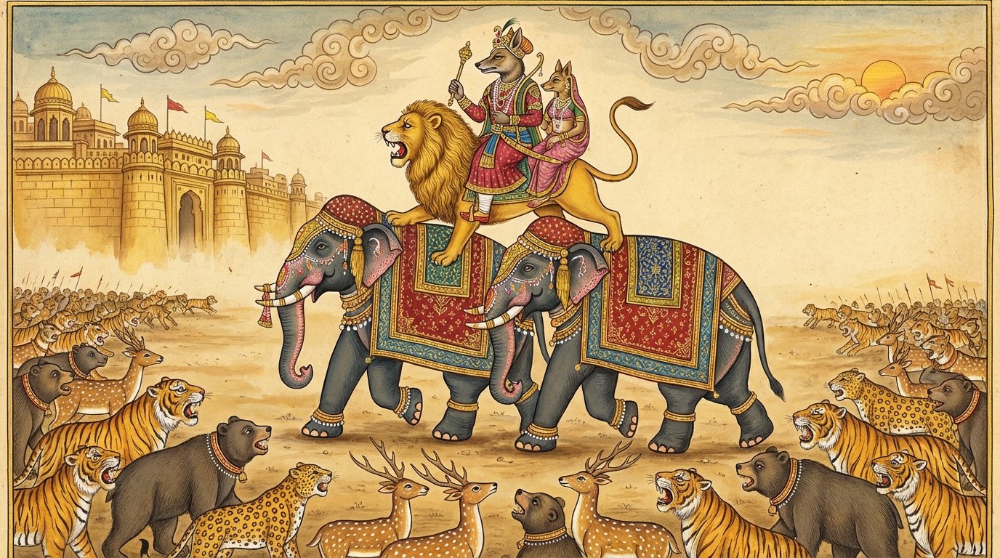

1. සබ්බදාඨ ජාතක කථාව (241)
“සිඞ්ගාලො මානත්ථද්ධො” (හිවලා මානයෙන් දරදඬු වී) යන මේ ධර්ම දේශනාව බුදුරජාණන් වහන්සේ වේළුවනාරාමයෙහි වැඩ වාසය කරද්දී දේවදත්ත තෙරුන් අරබයා වදාළ සේක. දේවදත්ත තෙරුන් අජාසත් රජු පහදවාගෙන උපදවා ගත් ලාභ සත්කාර දිගු කලක් පවත්වාගෙන යාමට අසමත් විය. නාලාගිරි ඇතු මෙහෙයවූ අවස්ථාවේ සිදු වූ ප්රාතිහාර්යය ජනයා දුටු තැන් පටන් ඔහුගේ ඒ ලාභ සත්කාර අතුරුදහන් විය. ඉක්බිති එක් දිනක් භික්ෂූන් වහන්සේලා දම්සභාවෙහිදී “ඇවැත්නි! දේවදත්ත තෙරුන්ට ලාභ සත්කාර උපදවාගෙන ඒවා දිගු කලක් පවත්වාගෙන යාමට නොහැකි වී යැ”යි කථාවක් මතු කළහ. බුදුරජාණන් වහන්සේ එහි වැඩමවා, “මහණෙනි! මා එන්නට පෙර මෙහි කිනම් කතාවකින් යුතුව සිටියාහු දැ?”යි විචාරා, “මෙනම් කථාවෙන් යැ”යි කී කල්හි, “මහණෙනි! දේවදත්ත තමන්ට උපන්නා වූ ලාභ සත්කාර අතුරුදහන් කර ගත්තේ දැන් පමණක් නොවේ; පෙරත් එසේ අතුරුදහන් කර ගත්තේ යැ”යි වදාරා අතීත කථාව ගෙනහැර දැක්වූ සේක.
යටගිය දවස බරණැස් නුවර බ්රහ්මදත්ත රජු රාජ්යය කරද්දී, ත්රිවේදයෙහි ද අටළොස් ශිල්පයන්හි ද පරතෙරට ගිය බෝධිසත්ත්වයෝ රජුගේ පුරෝහිත බමුණා වූහ. ඔහු “පඨවීජය මන්ත්රය” (පොළව ජයගැනීමේ මන්ත්රයක්) දනී. පඨවීජය මන්ත්රය යනු “ආවර්ජන මන්ත්රය” යැයි කියනු ලැබේ. ඉක්බිති එක් දිනක් බෝධිසත්ත්වයෝ “ඒ මන්ත්රය සජ්ඣායනා කරන්නෙමි”යි එක්තරා එළිමහන් තැනක ඇති ගල් තලාවක් මත හිඳගෙන සජ්ඣායනා කළහ. ඒ මන්ත්රය වනාහි විධි අනුගමනය නොකළ අන් කෙනෙකුට ඇසිය නොහැකි ය. එනිසා ඔහු එවැනි තැනක සජ්ඣායනා කරයි. ඉක්බිති ඔහු සජ්ඣායනා කරන වේලාවෙහි එක් බෙනයක හුන් හිවලෙක් ඒ මන්ත්රය අසාගෙන සිටීමෙන්ම ප්රගුණ කළේ ය. ඒ හිවලා වනාහි ඊට පෙර ආත්මභාවයේදී පඨවීජය මන්ත්රය පුහුණු කළ බමුණෙක් විය. බෝධිසත්ත්වයෝ සජ්ඣායනා කොට නැගිට, “ඒකාන්තයෙන් මේ මන්ත්රය මට ප්රගුණ යැ”යි කීහ. හිවලා බෙනයෙන් එළියට පැමිණ, “එම්බා බමුණ! මේ මන්ත්රය ඔබට වඩා මට ප්රගුණ යැ”යි කියා පලා ගියේ ය. බෝධිසත්ත්වයෝ “මේ හිවලා මහත් අකුසලයක් කරන්නේ යැ”යි සිතා “ගනිවු! ගනිවු!” යැයි කියමින් ටික දුරක් ලුහුබැන්දේ ය. හිවලා පලා ගොස් කැලයට පිවිසියේ ය.
ඒ හිවලා ගොස් එක් හිවලියකගේ ඇඟ ටිකක් හැපුවේ ය. “ස්වාමීනි! ඇයි දැ?”යි ඈ ඇසූ කල්හි, “ඔබ මා ගැන දන්නෙහි ද? නොදන්නෙහි දැ?”යි ඇසී ය. ඈ, “එසේය, දනිමි”යි කියා පිළිගත්තා ය. හිවලා පඨවීජය මන්ත්රය මතුරා නොයෙක් සිය ගණන් හිවලුන්ට අණ කොට, සියලුම:
- ඇතුන්
- අශ්වයන්
- සිංහයන්
- ව්යාඝ්රයන්
- ඌරන්
- මුවන්
ආදී සිවුපාවුන් තමන් සමීපයට ළං කර ගත්තේ ය. එසේ රැස් කරවා “සබ්බදාඨ” නම් රජ වී එක් හිවලියක අගමෙහෙසිය කර ගත්තේ ය. ඇතුන් දෙදෙනෙකුගේ පිටෙහි සිංහයෙක් සිටී. සිංහයාගේ පිටෙහි සබ්බදාඨ නම් හිවල් රජ, හිවල් අගමෙහෙසිය සමඟ හිඳියි. ඔහුට මහත් පිරිවර සම්පතක් විය. හිවලා මහත් සම්පතින් මත් වී මානය උපදවාගෙන, “බරණැස් රාජ්යය අල්ලා ගන්නෙමි”යි සිතා සියලු සිවුපාවුන් පිරිවරාගෙන බරණැස් නුවරට නුදුරු තැනකට පැමිණියේ ය. සිවුපාවුන්ගේ පිරිස් ප්රමාණය දොළොස් යොදුනක් දුරට පැතිරුණි. හිවලා නුදුරෙහි සිටියේ ම, “මට රාජ්යය දෙව! නැතිනම් යුද්ධ හෝ කරව!”යි රජුට පණිවිඩ යැවී ය. බරණැස් නුවරවාසීහු බියෙන් තැතිගෙන නගරයෙහි දොරටු වසාගෙන සිටියහ.

බෝධිසත්ත්වයෝ රජු වෙත එළඹ, “මහරජතුමනි, බිය නොවන්න. සබ්බදාඨ හිවලා සමඟ යුද්ධ කිරීම මට භාර ය. මා හැර ඔහු සමඟ යුද්ධ කිරීමට සමත් වෙනත් කෙනෙක් නම් නැතැ”යි කියා රජු ද නගරවාසීන් ද සනසා, “කුමක් කොට සබ්බදාඨ මේ රාජ්යය අල්ලා ගන්නේ දැයි පළමු කොට ඔහුගෙන් විචාරන්නෙමි”යි සිතා දොරටු අට්ටාලයට නැග, “මිත්ර සබ්බදාඨ! කුමක් කොට මේ රාජ්යය ගන්නෙහි දැ?”යි විචාළේ ය. “සිංහනාද කරවා මහජනයා ශබ්දයෙන් තැති ගන්වා ගන්නෙමි”යි ඔහු කීවේ ය. බෝධිසත්ත්වයෝ ‘කළ යුත්තක් ඇතැ’යි දැන අට්ටාලයෙන් බැස, දොළොස් යොදුන් පමණ වූ බරණැස නුවරවැසි සියලු දෙනාම කන් සිදුරු උඳු පිටිවලින් තවරා ගන්නැයි බෙර හැසිරවී ය. මහජනයා බෙර අණ අසා යටත් පිරිසෙයින් බළලුන් දක්වා ම සියලු සතුන්ගේ ද, තමන්ගේ ද කන් සිදුරු අනුන්ගේ ශබ්දයක් අසන්නට නොහැකි වන සේ උඳු පිටිවලින් තවරා ගත්හ.
ඉක්බිති බෝධිසත්ත්වයෝ නැවත අට්ටාලයට නැග, “සබ්බදාඨ!” යැයි ඇමතූහ. “ඇයි බමුණානෙනි?” “මේ රාජ්යය කුමක් කොට ගන්නෙහි ද?” “සිංහනාද පවත්වා මිනිසුන් තැති ගන්වා මරණයට පමුණුවා ගන්නෙමි”යි කීවේ ය. එවිට බෝධිසත්ත්වයෝ, “නුඹට සිංහනාදයක් කරවා ගන්නට නොහැකි වනු ඇත. උසස් සිවුපා කුලයෙහි උපන්, ඉතා රතු අත්පා ඇති කේසර සිංහරාජයෝ නුඹ වැනි ජරා හිවලකුගේ අණ නොපිළිපදින්නෝ ය”යි කීහ. හිවලා මානයෙන් දැඩි වී, “අන් සිංහයෝ සිටිත්වා! මා නැග සිටින සිංහයා ලවා ම නාද කරවන්නෙමි”යි කීවේ ය. “එසේ නම් නාද කරව! ඉදින් හැකිනම්!” යැයි බෝධිසත්ත්වයෝ අභියෝග කළහ. හිවලා තමා නැග සිටින සිංහයාට “නාද කරව”යි පයින් සංඥාවක් දුන්නේ ය. සිංහයා ඇත් කුඹෙහි මුව තබා තුන් වරක් කිසිවකුට නැවතිය නොහැකි බිහිසුණු සිංහනාද කළේ ය. ඇත්තු සන්ත්රාසයට පත්වී හිවලා බිම දමා ඌගේ හිස පයිනුත් පාගා සුනු විසුණු කළහ. සබ්බදාඨ එතැනම මරණයට පත් විය. ඒ ඇත්තු ද සිංහනාදය අසා මරණ බියෙන් තැතිගෙන එකිනෙකා ඇනගෙන එතැනම මරණයට පත් වූහ. සිංහයන් හැර සෙසු මුව, ඌරු ආදීන් ද, හාවුන්, බළලුන් කෙළවර කොට ඇති සියලු සිවුපාවෝ ද එතැනම මරණයට පත් වූහ. සිංහයෝ පලා ගොස් වනයට පිවිසියහ. දොළොස් යොදුනක් මඟ දිගට මස් ගොඩවල් විය. බෝධිසත්ත්වයෝ අට්ටාලයෙන් බැස නගරයෙහි දොරටු විවර කරවා, “සියල්ලෝම තමන්ගේ කන්වල උඳු පිටි ඉවත් කොට මස් කැමති අයට මස් ගෙන යන්නැ”යි නුවර බෙර හැසිරවූහ. මිනිස්සු අමු මස් කා ඉතිරිය වියලවා ‘වල්ලූර’ (වියළි මස්) කළාහු ය. ඒ කාලයෙහි පටන් වියළි මස් සෑදීම ඇති වී යැයි කියති.
බුදුරජාණන් වහන්සේ මේ ධර්ම දේශනාව ගෙනහැර දක්වා, මේ අභිසම්බුද්ධ ගාථා වදාරා ජාතකය ගළපා වදාළ සේක:
“මහ පිරිවර නිසා මානයෙන් උද්දාම වූ හිවලා, තව තවත් පිරිවර කැමති වූයේ මහත් සම්පත්තියට පැමිණියේ ය. දළ ඇති සියලු සිවුපා සතුන්ට රජ විය.”
“ඒ වාගේම මිනිසුන් අතුරේ යමෙක් පිරිවර ඇත්තේ වේ ද, ඔහු දළ ඇති සිවුපාවුන්ට රජ වූ හිවලා සේ (අන්යන් අතර) ශ්රේෂ්ඨ වේ.”
යන අභිසම්බුද්ධ ගාථා වදාරා ජාතක කථාව ගලපා නිමවා වදාළ සේක.
එහි, මානත්ථද්ධො යනු පිරිවර නිසා උපන් මානයෙන් දැඩි වූ තැනැත්තා ය. පරිවාරෙන අත්ථිකො යනු තවදුරටත් පිරිවරෙන් ප්රයෝජන ඇත්තෙක් වී ය. මහතිං භූමිං යනු මහත් වූ සම්පතයි. රාජාසි සබ්බදාඨිනං යනු දළ ඇති සියල්ලන්ගේ රජ විය. සො හි තත්ථ මහා හොති යනු ඒ පිරිවර ඇති පුරුෂයා ඔවුන් විසින් පිරිවැරූ කල්හි ‘මහා’ (ශ්රේෂ්ඨ) නම් වෙයි. සිඞ්ගාලො විය දාඨිනං යනු දළ ඇති සතුන්ට හිවලා ‘මහා’ වූවා සේ ‘මහා’ වෙයි. ඉන්පසු (උඩඟුකම නිසා) ඒ හිවලා මෙන් මිනිසා ද ප්රමාදයට පත්ව ඒ පිරිවර නිසා ම විනාශයට පැමිණෙයි.
“එකල හිවලා වූයේ දේවදත්ත ය. රජතුමා වූයේ සැරියුත් ය. පුරෝහිත බමුණා වනාහි මම ම වූයෙමි”යි වදාළ සේක.
පළමුවැනි සබ්බදාඨ ජාතක වර්ණනාව නිමි.